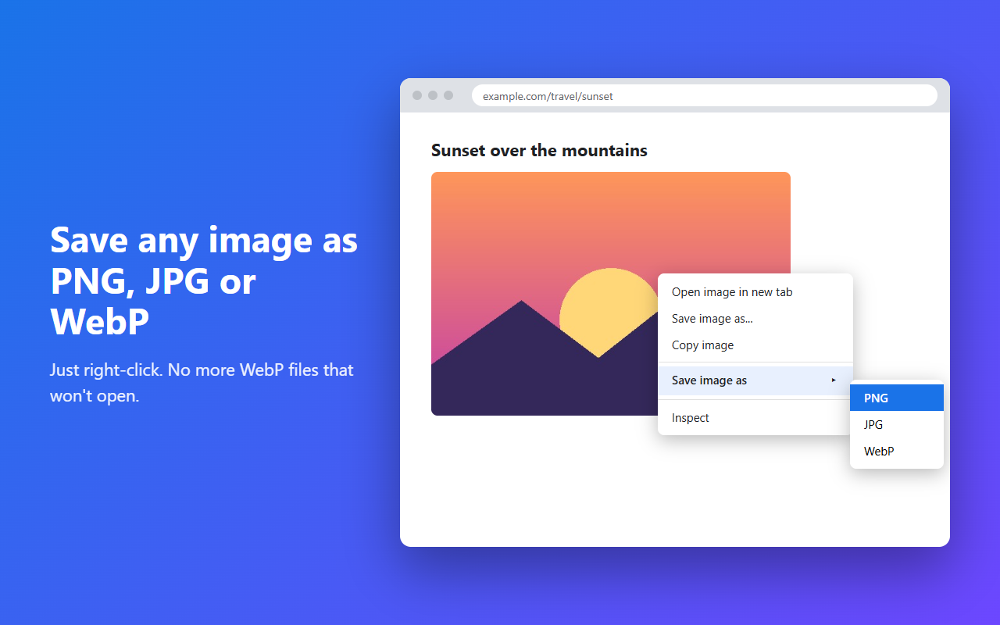

Save any image as PNG, JPG or WebP.
Right-click an image, choose a format, done. Converted 100% on your device — nothing is uploaded, nothing is tracked.

How it works
- Right-click an imageOn any web page.
- Choose “Save image as”Then pick PNG, JPG or WebP.
- It's savedThe image is re-encoded on your device and saved with Chrome's download feature.
Private by design
On-device conversion
Images are converted with a canvas inside your browser. Nothing is uploaded.
No tracking
No analytics, no ads, no remote servers — not in the extension, not on this site.
Minimal permissions
Site access is optional and is used only to load the image you right-clicked.
FAQ
Why does it ask for access to all sites?
Images are often hosted on other servers (CDNs). The permission is optional, requested once from the welcome page, and used only to load the image you chose.
What happens to transparent images saved as JPG?
JPG has no transparency, so transparent areas become white.
Does it cost anything?
No. It's free.
日本語の方へ
画像を右クリックして「画像を形式を指定して保存」から PNG・JPG・WebP を選ぶだけで保存できます。変換はすべて端末内で行い、どこにもアップロードしません。広告・アクセス解析もありません。